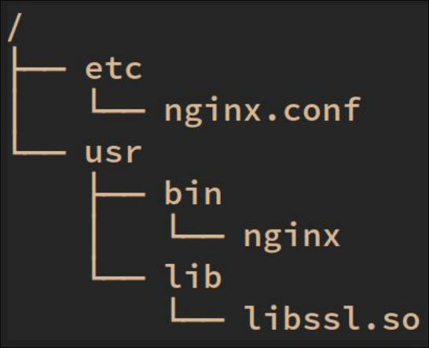

Overview of Nix
Overview of Nix
 Overview of Nix
Overview of NixBy Yogansh
What is Nix?
Nix is a package manager just like apt, pacman, homebrew ...
$ sudo apt install cowsay$ nix profile install nixpkgs#cowsay
Advantages of Nix
- Reproducible Enviorments Work the same everytime even on diffrent machines
- Declarative trivial to share development and build environments
- Configuration Use a single language to manage machine and user configuration
- Rollbacks Break something? Easily rollback machine configuration. Experiment without fear
Nix Language
- Pure
- Lazily evaluated
- Functional
- Domain specific
Nix Derivations
A derivation is a recipe for building packages
- Take some inputs
- Run a build script
- Get a package output
Example
{ stdenvNoCC, lib, fetchFromGitHub }:
stdenvNoCC.mkDerivation rec {
pname = "pfetch";
version = "0.6.0";
src = fetchFromGitHub {
owner = "dylanaraps";
repo = "pfetch";
rev = version;
sha256 = "06z0k1naw3k052p2z7241lx92rp5m07zlr0alx8pdm6mkc3c4v8f";
};
dontBuild = true;
installPhase = ''
install -Dm755 -t $out/bin pfetch
'';
meta = with lib; {
description = "A pretty system information tool written in POSIX sh";
homepage = "https://github.com/dylanaraps/pfetch";
license = licenses.mit;
platforms = platforms.all;
maintainers = with maintainers; [ equirosa ];
};
}
both instantiation and realization can be done in one step
using nix-build
Nix Shells
What is a Nix Shell?
- Originally designed to debug nix
- Can be used as a development enviorment
Simple Shell
$ nix-shell -p pfetch
...
[nix-shell:~]$ which pfetch
/nix/store/gv8sfh1d8dmsj06bszbjvf5v2349y0vv-pfetch-0.6.0/bin/pfetch
A cool tool!!
If you want this to be more automated you could use tools like direnv/nix-direnv
to automatically enter a shell when cding into a directory
Nix Store
Now we have a way to write derivations to build packages, but where are the packages stored?
A special place called /nix/store
[nix-shell:~]$ which pfetch
/nix/store/gv8sfh1d8dmsj06bszbjvf5v2349y0vv-pfetch-0.6.0/bin/pfetch
Filesystem Hierarchy Standard

Dependency tracking
The Nix store keeps track of what packages each package depends on
[nix-shell:~]$ nix-store --query --tree $(which pfetch)
/nix/store/gv8sfh1d8dmsj06bszbjvf5v2349y0vv-pfetch-0.6.0
└───/nix/store/rhvbjmcfnkg8i2dxpzr114cp1ws7f667-bash-5.2-p15
├───/nix/store/yaz7pyf0ah88g2v505l38n0f3wg2vzdj-glibc-2.37-8
│ ├───/nix/store/0fvh2p4irz0lw0cpy2ll1rf2hbhbym3g-xgcc-12.2.0-libgcc
│ ├───/nix/store/xqcrq3aw2fnrj7cp3id90wzy8x46qhw3-libidn2-2.3.4
│ │ ├───/nix/store/f437nzzrmjmf5k7q93mawr93vfrsqdb0-libunistring-1.1
│ │ │ └───/nix/store/f437nzzrmjmf5k7q93mawr93vfrsqdb0-libunistring-1.1 [...]
│ │ └───/nix/store/xqcrq3aw2fnrj7cp3id90wzy8x46qhw3-libidn2-2.3.4 [...]
│ └───/nix/store/yaz7pyf0ah88g2v505l38n0f3wg2vzdj-glibc-2.37-8 [...]
└───/nix/store/rhvbjmcfnkg8i2dxpzr114cp1ws7f667-bash-5.2-p15 [...]
Garbage Collection
Nix can detect which packages are unused and uninstall them without breaking your system
$ nix-collect-garbagenixpkgs
nixpkgs is a collection of derivation for building over 80,000 diffrent packages

Why is that?
Nix packages is nothing more than a github repository
NixOs
What if we used Nix to build an OS.. just like another package?
- configure the entire system with Nix
- Reproducible Systems Recreate the identical machine configuration
- Rollbacks Break something? Easily rollbacks
sudo nixos-rebuild switch --rollback
Declarative way to define anything ...
users.users.yogansh = {
isNormalUser = true;
extraGroups = ["systemd-journal" "wheel"];
uid = 1000;
shell=pkgs.zsh;
}
home-manager
- Like dotfiles All managed with a single language, Nix
- Install packages for your user